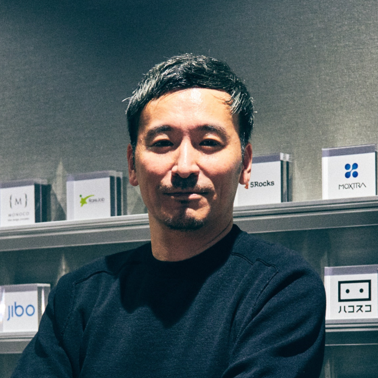
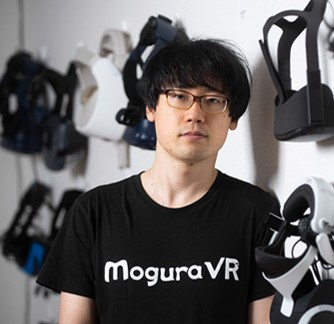
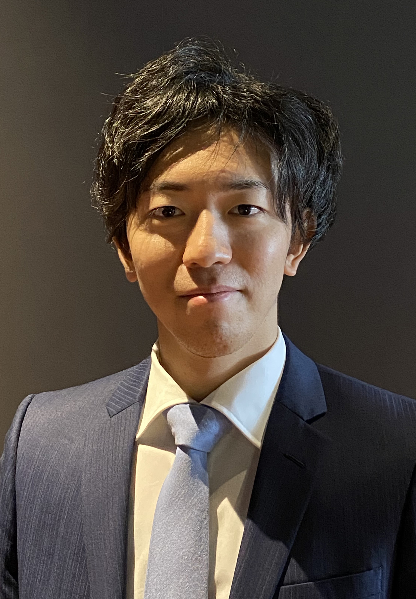
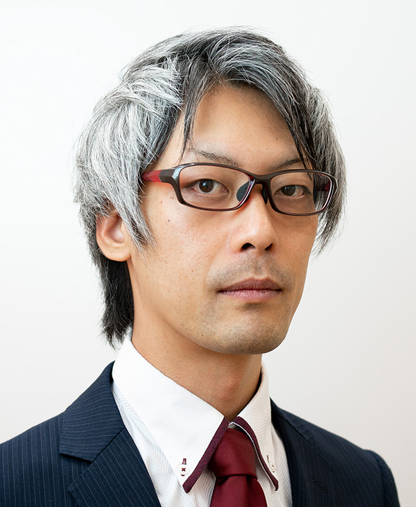
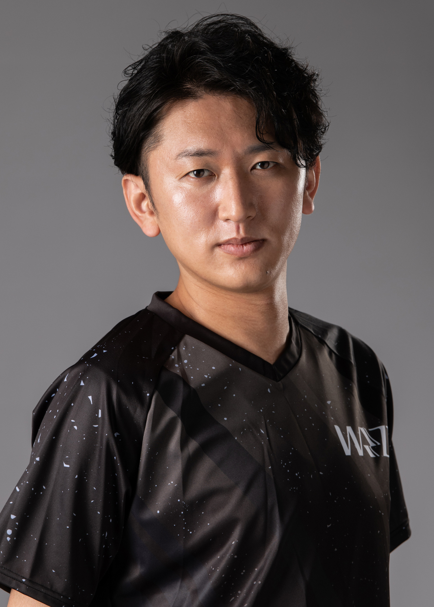
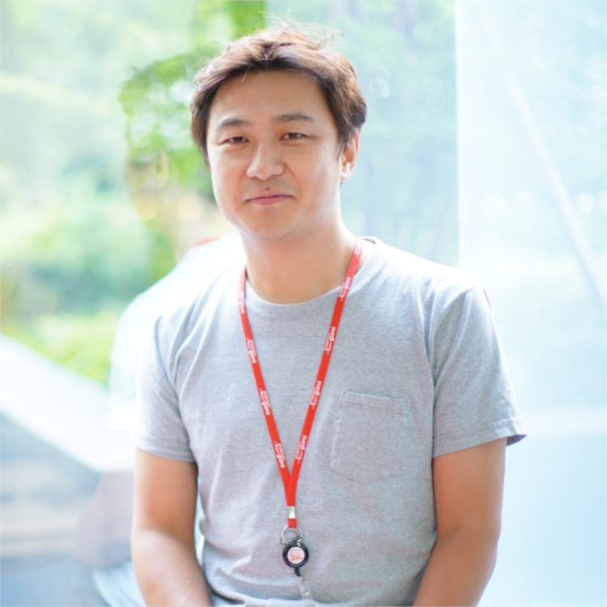
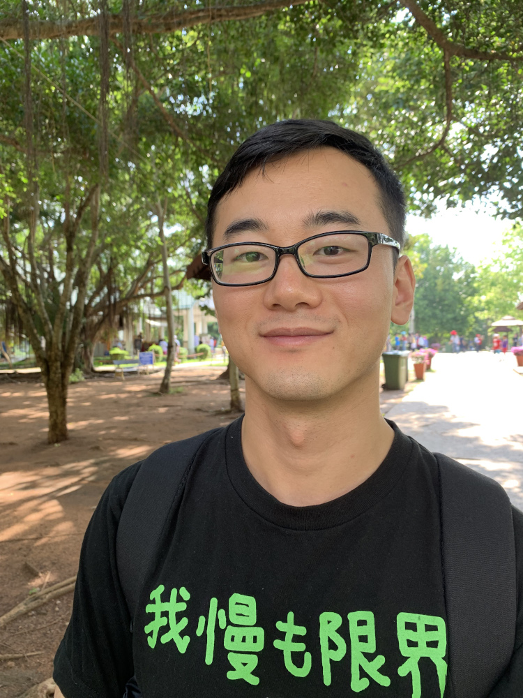
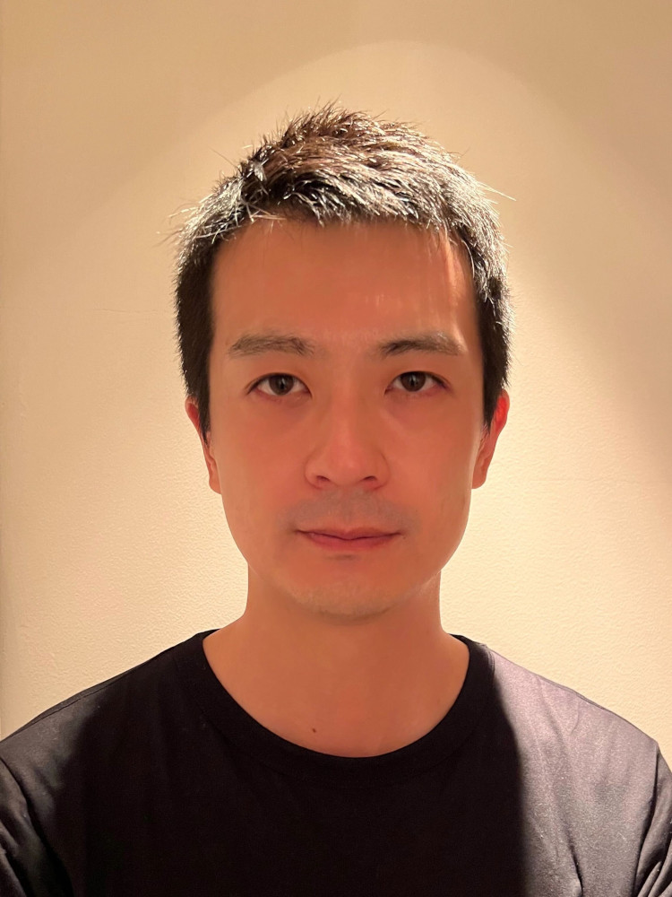
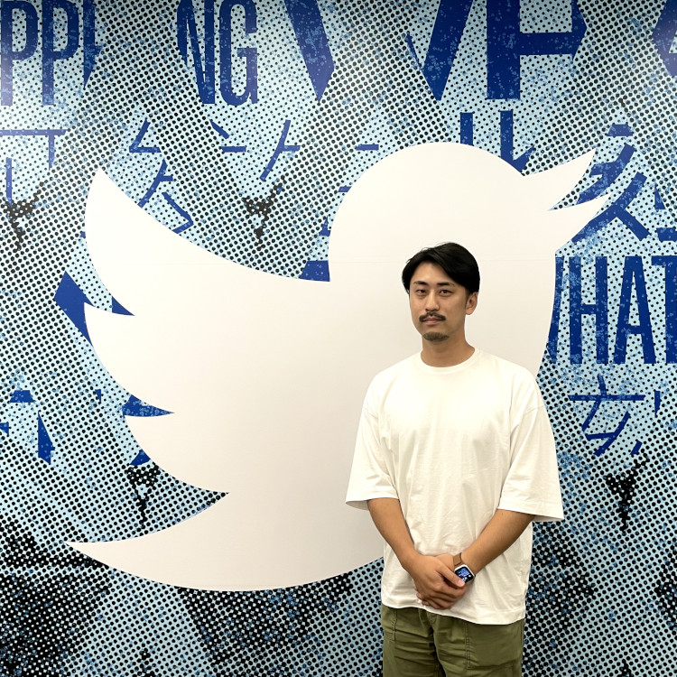
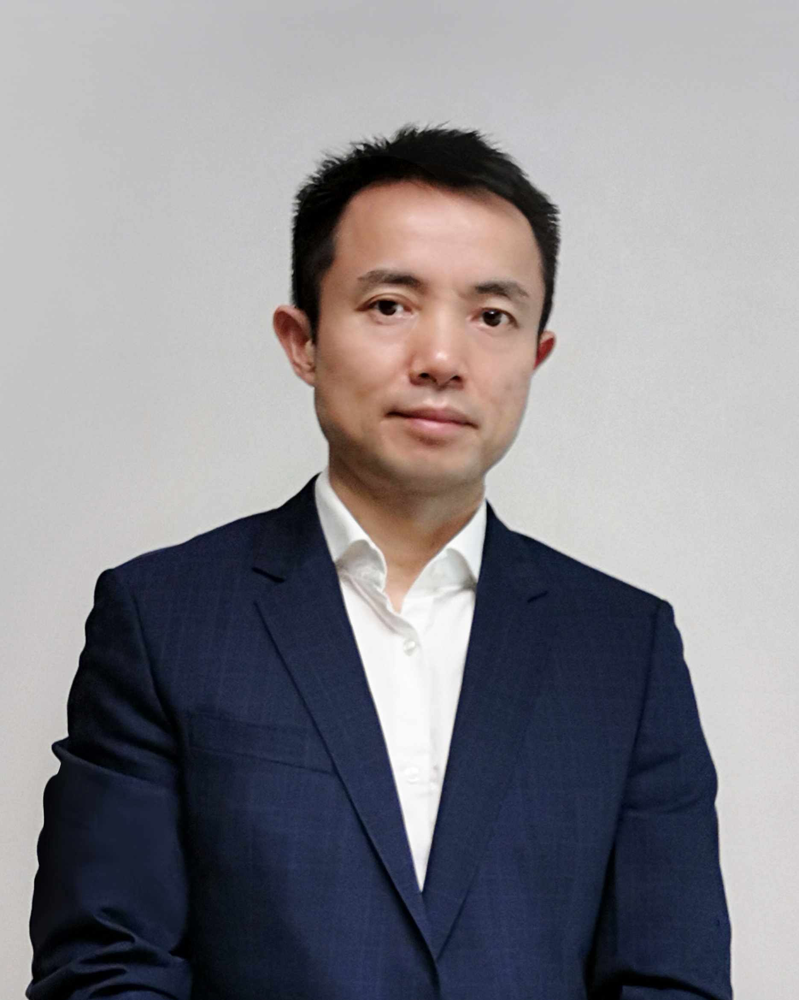

商务研讨会
TGS Forum
TGS Forum
TGS2022 have prepared a business seminar, "TGS Forum," on the theme of the game industry for businee participants.
On the second day of the Business Day (Friday, September 16), a real(in-person) lecture will be held at 10:30 a.m. in the International Conference Hall of Makuhari Messe for Business Day registered visitors. Those who wish to attend are requested to complete Business Day visitor registration (paid or free of charge) online in advance and have an admission badge issued at the Business Day visitor desk on the day of the event (September 16) before coming to the lecture venue.
In parallel with the real(in-person) seminars, participants can also attend various seminars of the TGS Forum online. After logging-in to the Business Day visitor registration system (Event regist), you will be able to move to the screen for auditing business seminars online. Please select the seminar you wish to view. The deadline for archived distribution is September 30 (Sunday). There are two types of TGS Forum: "sponsored session" offered by exhibitors (the sponsor's name is listed in the seminar title) and "organizer`s session" offered by the organizer. If you wish to view a "sponsored session," please be sure to read the "Guide to Viewing TGS Forum Sponsored Session" below.
【About Privacy Policy】
【About Privacy Policy】
The personal information that you have entered will be collected by EventRegist Co., Ltd.. It will then be managed in full compliance with Privacy Statement of EventRegist Co., Ltd. Also, the same information will be provided to respective third parties, CESA (Computer Entertainment Supplier’s Association), Nikkei Business Publications Inc. and DENTSU, the organizers of TOKYO GAME SHOW 2022 for the purpose of the sending information （e-mail, direct mail and research questionnaire etc.). After Providing Personal Information to CESA, Nikkei Business Publications Inc. and DENTSU each will then manage your information on its own responsibility.
In addition, the Tokyo Game Show use a QR code system for visitor's badges in order to eliminate the need for visitors to provide business cards and enter addresses and names at each exhibition booth and seminar room.
When the QR code on badge presented by a visitor is scanned at an exhibition booth or seminar room, or when you have viewed the seminar on the online viewing page, the information you registered for attending the exhibition will be provided by co-organizer Nikkei Business Publications Inc. to the relevant exhibiting company and company supporting the seminar (speaking/presenting company). The personal information provided to each exhibiting company and each company supporting seminars will be managed at the responsibility of each company, and they may use it for introducing various items such as products, services, seminars, and surveys.
Be sure that you agree to the above before presenting your visitor's badge.
CESA's Privacy Policy
https://www.cesa.or.jp/privacy.html
Nikkei BP's Personal Information Protection Policy
https://www.nikkeibp.co.jp/english/privacy/index.html
DENTSU's Explanation of the personal information acquisition
https://dentsu-rm.co.jp/en/privacypolicy/
Organizer Sessions
Organizer Sessions
Program KR-01
Date and Time: From 10:30 a.m. to noon, September 16 (Fri.)
Venue: International Conference Hall 201
Metaverse Frontline: Evolution of Hardware and Software and What is Needed in the Future
The "metaverse" has become a major topic of discussion. The evolution of software has been remarkable, with the emergence of a wide variety of virtual space services, especially games, and the appearance of platforms that allow users to freely create and sell 3D items. At the same time, hardware is also steadily evolving. The environment is becoming more and more complete, with the release of new models by Meta and other notable new models by domestic manufacturers. We will share the latest information on the business of Metaverse, focusing on the current status of the evolution of software and hardware, the two wheels that make it possible to experience the Metaverse space, and the issues that need to be addressed for Metaverse to become more commonplace.
-
Takuma Iwasa
Representative Director and CEO, Shiftall
He started his career at Panasonic and in 2008, he founds Cerevo Inc. as hardware start-up and sold over 30 IoT products in over 70 countries and regions. In 2018 he founds Shiftall Inc. as Panasonic group company. From 2021, Shiftall focusing VR/Metaverse products like HaritoraX the $270 FBT device. In 2022, Shiftall unveiled four new metaverse-related devices at CES 2022, including a VR headset 'MeganeX' and a microphone 'mutalk' that does not leak sound.
-

-
Kazuhiko Chuman
Deputy General Manager, KDDI
Deputy General Manager
Investment ＆Business Development of KDDI.
Managing KDDI Open Innovation Fund, a corporate venture capital established in 2012.
Launching KDDI's new businesses based on the partnership with startups, enterprises and local governments.
-

-
Shun Kubota
Mogura, CEO / Mogura VR, Chief of Editor / XR journalist
After graduating from Keio University's Faculty of Law with a degree in Political Science, he joined the Ministry of the Environment, and in 2015 launched Mogura VR, a web publication specializing in XR and metaverse, and founded Mogura Inc. He is fascinated by the unlimited potential of this field to change society, and is developing businesses to expand it. Author of 「Future Strategy of Metaverse」Nikkei BP（2022）。
【Modeletor】
Taichi Morioka
Deputy Editor, Nikkei X TREND, Nikkei Business Publications
*Mr. Chris Pruett of Meta will not be able to come to Japan due to personal reasons. We apologize to everyone who was looking forward to the lecture.
Program KS-01
Date and Time: From 10:30 a.m. to noon, September 16 (Fri.)
Venue: International Conference Hall 302
“Future of esports”
A panel discussion on the theme of continuous and healthy growth of the Japanese e-sports market. Professional e-sports players, relevant ministries and agencies, media, and other people from various fields related to e-sports will be invited to exchange a wide range of opinions on current issues, future possibilities, and actions that should be taken by each field to open up the future of e-sports.
-

-
Ueda Yasunari
Ministry of Economy,Trade and Industry, Deputy Director Media and Content Industry Division Commerce and Information Policy Bureau
At the Ministry of Economy, Trade and Industry, he was involved in (1) intellectual property policy, including the revision of the Unfair Competition Prevention Law, (2) policy for data utilization, and (3) work related to the formulation of the Growth Strategy Action Plan as a government-wide initiative. He has been in his current position since June last year.
He is in charge of DX human resource development in the game industry, e-sports, virtual space/metaverse, and content industries.
-
Kazuhisa Okada
Aetas, CEO / Editor-in-chief of 4Gamer.net
The Journey started from a simple suggestion from my boss at Softbank. I opened 4Gamer.net as an personal website in 2000, and suprised to find it kept growing, and growing, and growing. The website I wish to have it survive for 3 years at that time, became such a huge media before my awareness. I suddenly realized that the website had become a company and that I was now the CEO, also aged as one of the oldest people in the industry. It has been a far long rolling journey, a journey still on the way.
-

-
Tatsuya Sugisawa
MouseComputer, General Manager, Marketing HQ
In 2006, he joined Mouse Computer, Inc. After working in sales, as a product manager of gaming PCs, he was one of the first to work on marketing utilizing live streaming and e-sports. Later, as Product Department Manager, he was in charge of marketing for all products, and has been in his current position since 2021. He oversees the product department, marketing department, public relations department, and internal production department.
-

-
Nemo
Wellplayed Rizest, Professional esports player
A professional gamer who mainly plays "Street Fighter V", he is a JeSU-certified professional license holder, and was a member of "Team Liquid" until March 2009. He is now a member of "Wellplayed Raizest" in order to expand the scope of his activities, such as e-sports business and training for future generations.
Sponsorship Sessions
Sponsorship Sessions
TGS Forum offers Sponsorship Sessions organized by exhibitors sponsoring TGS2022 in addition to Organizer Sessions. The company name of each sponsor is shown on the sponsorship session program title. If you pre-register or register at the door to participate in a sponsorship session, the TGS2022 Secretariat of Nikkei BP will collect your data (personal information entered for pre-registration or the information on your name card) and provide them to a sponsor of the session (third party provision.)
Provision of Personal Information to Overseas Exhibitors and Sponsors to Third Parties
Program SR-02
Date and Time: From 12:30 p.m. to 1:30 p.m. September 16 (Fri.)
Venue: International Conference Hall 201
<Sponsor> Freeverse.io
‘Living Asset’ NFTs: Playing Fair in the Metaverse
NFTs have taken the world by storm in 2021, surpassing $20Bn in sales, and their rise has resulted in the “play-to-earn” model in the gaming sphere – allowing gamers to buy rare digital items and hope to profit by selling them. But turning gamers into gamblers does not make long-term sense for the wider industry, as it depends on a never-ending supply of new gamers at the bottom of the pyramid. Living Assets are NFTs that can change and evolve based on how they are used in-game, thus, their market-value is based on how the gamer has played with them. In this talk, we’ll explore how this concept turns the passive experience of collecting and speculating into an active experience of using and engaging – which inherently makes more sense for games and the metaverse.
-
Alun Evans
Freeverse.io
CEO at Freeverse
Alun is CEO and co-founder of Freeverse.io - the home of Living Assets (NFT 2.0). Alun has over 15 years' experience in the tech industry for entertainment, and has a strong passion for building teams with a strong collaborative culture, that are focused on creating products that solve genuine problems. He was previously CEO of Shar3d.io, CTO of Bodypal.com, and Director of Barcelona World Race - THE GAME. Alun has a Ph.D. in Medical Physics from University College London.
Program SR-03
Date and Time: From 2:00 p.m. to 3:00 p.m. September 16 (Fri.)
Venue: International Conference Hall 201
<Sponsor> double jump.tokyo
Today's Blockchain Game and The Future
"What is happening in blockchain games now?" double jump. tokyo, a blockchain game development company that has been involved in blockchain game development since the dawn of 2018 and won the global No. 1 position with "My Crypto Heroes" will introduce the current and future of blockchain games.
-

-
Yukinori Matsuya
double jump.Tokyo
COO
After working as an SE for financial system development at NTT Data, he worked as an executive officer of a marketing business at a web consulting company before starting his Facebook application development company. In 2015, he transferred his business ownership to Mobcast Inc. and joined the company. After gaining experience in game production, operation, and marketing, he stepped up as the director of Mobcast Games and the CEO of Social Capital. In July of 2019, he joined doublejump.tokyo Inc. and supervised game production, business development, and partnership development. In September of 2021, he became the COO of doublejump.tokyo Inc.
Program SR-04
Date and Time: From 3:30 p.m. to 4:30 p.m. September 16 (Fri.)
Venue: International Conference Hall 201
<Sponsor> NetEase Games
Ashfall: First Look Of The New Wasteland
NetEase Games' new post-apocalyptic RPG Ashfall is being unveiled for the first time, with the first gameplay trailer to be released on site. With a unique blend of Eastern elements, players can explore an unprecedented open world. The top production team includes many reknowned artists such as Hans Zimmer and Inon Zur, who helped create the game's music and art to provide an epic audio-visual feast for all players.*Speakers will appear via video message. ／MC: tonpi? (FUKUOKA TOMOHIRO)
*This seminar consists of two parts.
Part 1 is a product presentation that anyone can participate in.
Part 2 is a Press-only trial play experience.
-

-
Jesse
NetEase Games
LEGENDARY STAR STUDIO
Ashfall developer
Program SS-02
Date and Time: From 12:30 p.m. to 1:00 p.m. September 16 (Fri.)
Venue: International Conference Hall 302
<Sponsor> Twitter Japan
Content Growth Strategies Leveraging Twitter
Game producers and those involved in promotion will be introduced to the use of Twitter for content growth. As the title suggests, Twitter will support you in attracting potential fans and acquiring new fans by providing a space for public conversation.
-

-
Yu Nakamura
Twitter Japan
Twitter Client Solutions, Gaming Team / Manager
Nakamura joined Twitter Japan in 2015 as a Client Partner in charge of the retail industry, and from 2021, he is leading the gaming team as manager, overseeing the sales organization for major gaming advertisers. Prior to joining Twitter Japan, He worked in advertising sales and management at a web advertising agency after graduating from university.
-

-
Yujin Saito
Twitter Japan
Twitter Client Solutions, Gaming Team / Manager
Saito joined Twitter Japan in 2015, where he was responsible for sales in the entertainment industry, including film distributors, broadcasters, publishers, and SVOD. He has been a sales lead for IT companies in the global account team and has contributed to the expansion of ad sales in the Japanese market.He has been manager of the gaming team since 2022.
Program SS-03
Date and Time: From 1:30 p.m. to 2:00 p.m. September 16 (Fri.)
Venue: International Conference Hall 302
<Sponsor> Huawei Technologies Japan
Service first, make greater games together with developers
1-Introduction of HUAWEI MOBILE SERVICES
2-Introduction to HUAWEI game ecosystem development
3-Overall game development and operation services at HUAWEI
4-Incentive policy for game developers
-

-
Raymond Liu
HUAWEI Technologies Japan
Director,
Ecosystem Development & Operation
Raymond Liu is the VP of Huawei Global Ecosystem Development, in Japan and Korea region. He has rich experience in the global ecosystem development and he is passioante to work with
Program SS-04
Date and Time: From 2:30 p.m. to 3:00 p.m. September 16 (Fri.)
Venue: International Conference Hall 302
<Sponsor> PolkaFantasy
Next-Gen Blockchain Game -Manetization Strategy-
As the COO/Director specializing in blockchain strategy and development, he has led a number of projects to great success with two of the projects winning global awards.
-
Alex Hui
Fantasy Tech
CEO
Alex is the founder of PolkaFantasy, and currently leading the teams in Hong Kong and Japan as the CEO. He is dedicated to developing the next generation of GameFi ecosystem. Envisioning a blockchain world with businesses that can enrich people's lives, he is committed to transforming the gaming industry with blockchain technology and innovation.
Program SS-05
Date and Time: From 3:30 p.m. to 4:00 p.m. September 16 (Fri.)
Venue: International Conference Hall 302
<Sponsor> Moloco
Explaining the latest trend of app advertising “mobile DSP” from scratch
In the post-IDFA era, the true power of performance marketing is questioned.
If you use the latest mobile DSP trend, you can maximize the value of your company's data and accelerate your business growth.
In addition to Google, Twitter, etc., if you are looking for new ways to optimize your marketing budget, don't miss it! We will also thoroughly explain ad fraud.
-
Tatsuo Sakamoto
Moloco
Business Team / Head of Business, Japan